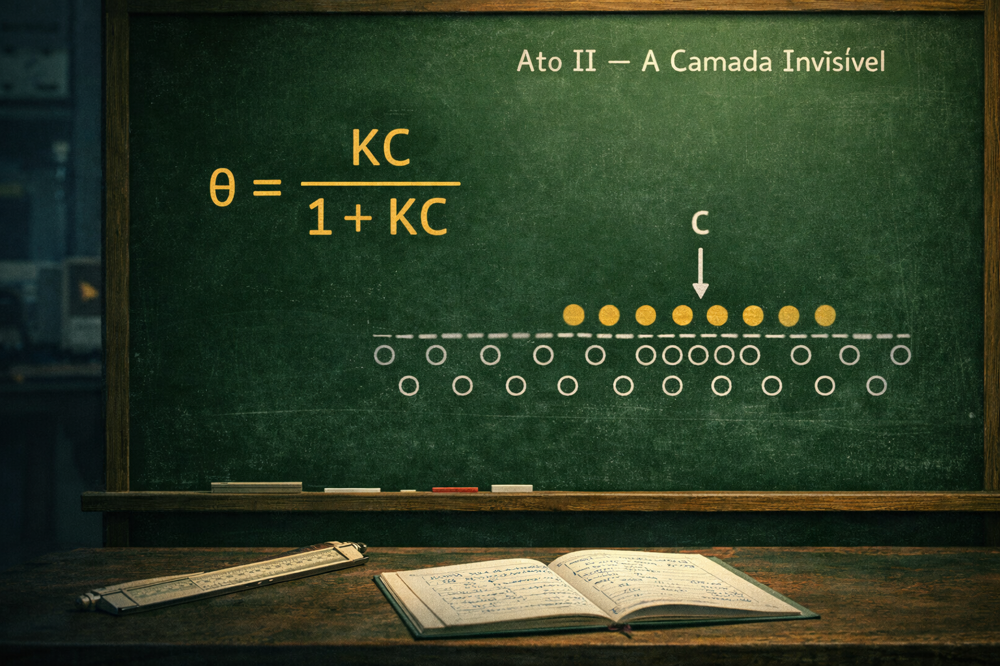

ATO III — O Pulso da Criação (Cinética)
Série RU 1991: A Essência da Soberania · Episódio 02
A dinâmica da transformação e a constante de velocidade (k)
Em 1991 o tempo não era medido por sensores de fibra óptica. Era medido pelo ritmo das equações de Arrhenius:
A constante de velocidade dependia da temperatura, da energia de ativação e do fator pré-exponencial. Sem dashboards em tempo real, o engenheiro lia o pulso do reator na lousa — e a matemática ganhava vida ali.
A cinética é onde a transformação deixa de ser abstração e define o destino do produto. A energia de ativação Ea é a barreira que a reação precisa transpor; o ritmo k é o coração do processo. Quem domina essa equação não apenas observa o ponteiro: domina o ritmo da planta. Em 1991, era assim que se entendia o pulso da criação — com giz, régua de cálculo e rigor.
Legenda LinkedIn (engajamento)
Hashtags
Navegação da série (binge-reading)
Chamada · Ep.01 · Ep.02 · Ep.03 — Ato IV · Ep.04 — Ato V · EpÃlogo
Contato
- E-mail: suporte@caracore.com.br
- Site: www.caracore.com.br
- LinkedIn: Cara Core Informática
Ato I — O Portal · Ato II — A Camada InvisÃvel · Ato III — O Pulso da Criação. Próximos atos no LinkedIn.
Seguir no LinkedIn
Artigo publicado em 31 de março de 2026
© 2026 Cara Core Informática. Todos os direitos reservados.